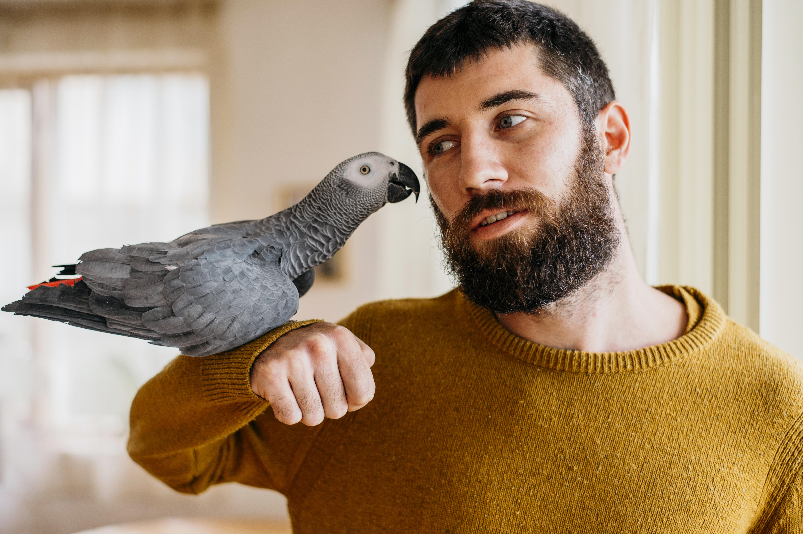

An emotional support pet, not to be confused with Service Animals, is an animal that provides comfort, companionship, and relief to individuals experiencing emotional or psychological challenges, such as anxiety, depression, or PTSD. They help to improve the owner's mental health through affection and companionship. The best emotional support pet for you will depend on your individual needs, lifestyle, preferences, and the pet's needs and well-being.
Here are the top 5 animals people prefer as thier buddies
Dog
Dogs are known for their loyalty and affection, traits that make them exceptional emotional support animals. They have an innate ability to sense human emotions and can provide comfort and companionship in trying times. Moreover, having a dog can encourage physical activity, such as walking, which can be beneficial for mental health.
Cat
Cats can be affectionate and comforting companions, offering a calming presence with their gentle purring and independent nature. They are low-maintenance compared to many other pets, requiring less time and physical effort to care for, making them great for individuals with a busy lifestyle or physical limitations.
Parrots
Birds can be very sociable and engaging, bringing joy and a sense of companionship to their owners. Their vocalizations and songs can be soothing, and caring for them can provide a fulfilling routine that fosters emotional well-being. Moreover, training and interacting with a bird can be stimulating and rewarding, offering a distraction from stress and anxiety.
Rabbits
They are gentle and quiet animals, making them great companions for individuals looking for a non-disruptive pet. They enjoy cuddles and can form deep bonds with their owners, providing comfort and affection. Additionally, rabbits have a playful and curious nature, and watching them explore and play can be a source of joy and relaxation.

Hamsters
Hamsters are small and relatively easy to care for, making them suitable for spaces with limited room. Their playful antics can provide entertainment and a sense of companionship. Moreover, caring for a hamster, including feeding and cleaning its habitat, can instill a sense of routine and responsibility, which can be grounding and comforting.